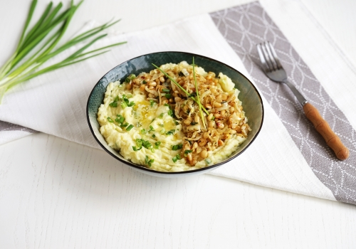
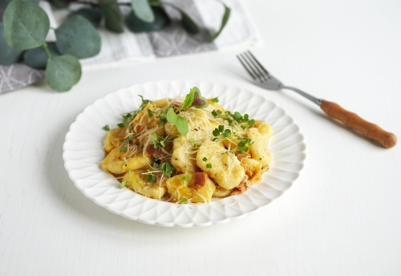
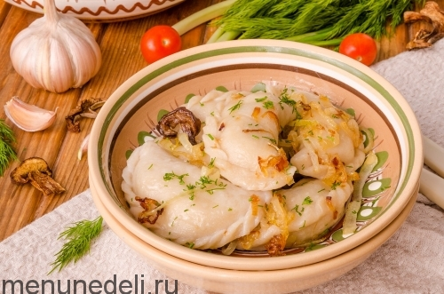

7 Рецепт картошки с овощами на сковороде
7 Рецепт картошки с овощами на сковородеТакие вкусные и разнообразные блюда зделанык из картошки. Картофель заслуженно называют вторым хлебом. Его можно подавать с мясом, рыбой, овощами, делать из него котлеты, запеканки или варить супы. Крахмалистый овощ умеет по-разному раскрываться в том или ином блюде. Те, кто при слове «картошка» вспоминает знаменитую картину Ван Гога и думает, что картофель — это продукт бедняков, просто еще не знаком с такими блюдами, как суп вишисуаз, гратен дофинуа и «Искушение Янсона». Рецепты из картофеля есть во всех национальных кухнях мира. Белорусы едят на завтрак драники с ягодным джемом, корейцы готовят из картофеля острые холодные закуски, американцы и дня не могут прожить без знаменитого картофеля фри, а в русской кухне картофельное пюре — универсальный гарнир к любому второму блюду. Вкусный корнеплод сочетается с другими овощами, молочными продуктами, птицей и рыбой. Наши авторы собрали рецепты самых вкусных, сытных и красивых блюд, в основе которых этот замечательный овощ.
Ирландское картофельное пюре покорит вас своей нежностью, необычным вкусом и воздушной текстурой.
Как приготовить ирландское картофельное пюре Ингредиенты: На кол-во порций − 6 + Картофель – 1000 г Сливки – 200 г 10% Масло сливочное – 60 г Капуста белокочанная – 400 г Орехи кедровые – 50 г Кунжут – 1 ст.л. Лук зеленый – 50 г Масло оливковое – 1 ст.л. Паприка – 1 ч.л. Соль – по вкусу 50 минут\30 минут. Рейтинг: 5 / 5 1 отзыв Подробнее о рейтинге ✕ ★★★★★ 1 ★★★★ 0 ★★★ 0 ★★ 0 ★ 0 . Оцените рецепт Количество порций: 6 порций . Калорийность (100g): 110 ккал Стоимость: очень экономно
Как приготовить ирландское картофельное пюре Ингредиенты: На кол-во порций: 6. Картофель – 1000 г. Сливки – 200 г 10%. Масло сливочное – 60 г. Капуста белокочанная – 400 г. Орехи кедровые – 50 г. Кунжут – 1 ст.л. Лук зеленый – 50 г. Масло оливковое – 1 ст.л. Паприка – 1 ч.л. Соль – по вкусу. Перец черный – по вкусу.

Картошка в беконе - это самостоятельное блюдо или королевский гарнир - как хотите. Шикарный рецепт для особого случая.
Общ.\актив. время готовки: 50 минут\15 минут Калорийность (100g): 147 ккал Картофель – 7 шт. Бекон – 7 шт. Специи – 2 ст.л. для картофеля Тимьян – 7 веточка (-и) Редис – по желанию Сметана – по желанию

Жаркое – это фактически жареное мясо. А жаркое с картошкой - классика и, пожалуй, одно из лучших сочетаний для обеда или ужина.
Общ.\актив. время готовки: 1 час\45 минут Калорийность (100g): 132 ккал Свинина – 200 г Бекон – 50 г Картофель – 3 шт. Лук репчатый – 1 шт. Перец сладкий – 2 шт. Соль – 1 ч.л.

Картошка фри - любимое блюдо многих-многих детей. Да и миллионы взрослых ее обожают.
Общ.\актив. время готовки: 30 минут\15 минут Калорийность (100g): 123 ккал Картофель – 500 г. Масло растительное – 30 г Порошок чесночный – 0.5 ч.л. Паприка – 0.5 ч.л. Соль – по вкусу.

Картофельные пызы - одно из самых популярных и самых любимых блюд белорусской кухни. Почему так вкусно? Потому что готовятся пызы из фарша и необычного теста из картошки с творогом.
Общ.\актив. время готовки: 1 час 40 минут\1 час 5 минут Калорийность (100g): 224 ккал. Картофель – 250 г. Творог – 200 г. Мука – 130 г. Крахмал – 70 г. Фарш мясной – 200 г. Лук репчатый – 50 г.

Состав этого незамысловато блюда понятен из самого названия, «картопля», это по-украински картошка.
Общ.\актив. время готовки: 50 минут\20 минут Калорийность (100g): 168 ккал Картофель – 1 кг Сало – 50 г Лук репчатый – 1 шт. Соль – по вкусу Перец черный – по вкусу Масло растительное – по желанию
7 Рецепт картошки с овощами на сковородеОчень простой рецепт картошки с овощами на сковороде. Можно готовить для легкого ужина.Шикарный рецепт для особого случая.
Общ.\актив. время готовки: 50 минут\15 минут Калорийность (100g): 147 ккал Картофель – 7 шт. Бекон – 7 шт. Специи – 2 ст.л. для картофеля. Тимьян – 7 веточка. (-и) Редис – по желанию. Сметана – по желанию

Картофельная запеканка – хорошая альтернатива уже приевшемуся пюре. Существует очень много разнообразных рецептов этого блюда: с мясным фаршем, сосисками, грибами и т. д. Мы же приготовим картофельную запеканку классическую, но в мультиварке, что значительно упростит процесс.
Общ.\актив. время готовки: 1 час 20 минут\20 минут Калорийность (100g): 115 ккал Картофель – 500 г. Молоко – 120 мл. Яйцо куриное – 2 шт. Сыр твердый – 100 г. Масло сливочное – 30 г. Лук репчатый – 1 шт.
Ньокки "Карбонара" в лучших традициях итальянской кухни готовятся легко, а на вкус просто превосходны. Нежные картофельные ньокки идеально сочетаются с классическим соусом с обжаренным луком и тонкими кусочками подкопченного бекона.
Общ.\актив. время готовки: 50 минут\40 минут Калорийность (100g): 231 ккал. Мука пшеничная – 250 г. Картофель – 500 г отварной. Яйцо – 1 шт. Бекон – 120 г. Лук репчатый – 50 г. Желток яичный – 3 шт.
Постные вареники с картошкой и грибами получаются вкусными и сытными. Готовятся они не совсем быстро, но их всегда можно приготовить много и заморозить впрок.
Общ.\актив. время готовки: 2 часа 30 минут\2 часа Калорийность (100g): 133 ккал Грибы – 30 г сушеных (или 150-200 г шампиньонов) Картофель – 1 кг (вес в неочищенном виде) Лук репчатый – 2 шт. (крупного размера) Чеснок – 2 зуб. Мука пшеничная – 450 г (в зависимости от качества, муки может потребоваться чуть больше или меньше) Вода – 300 г (кипяток)